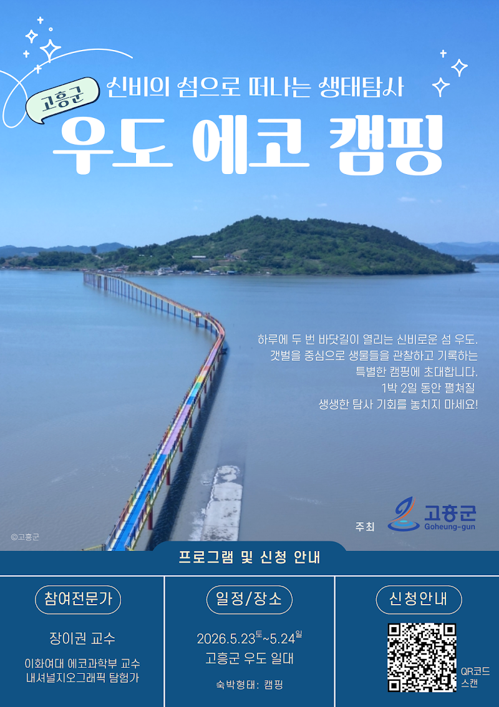
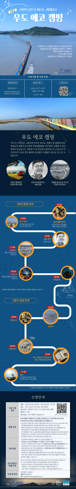

프로그램 소개
신비의 섬으로 떠나는 생태탐사

프로그램 상세 안내

신비의 섬으로 떠나는 생태탐사 < 우도 에코 캠핑 >
이번 여행은 우도 갯벌을 중심으로 진행되는 생태탐사로, 최대한 전기를 덜 쓰고 쓰레기를 최소화 하는 친환경 캠핑으로 운영됩니다.
아래 내용과 공지사항을 꼼꼼히 읽고 신청서를 작성해 주세요.
❥프로그램 개요
- 주최: 고흥군
- 일시: 2026년 5월 23일(토) - 24일(일) / 1박 2일
- 장소: 전라남도 고흥군 우도 일대
- 참가 자격: 대한민국 국민 누구나
- 참여 인원: 30명
- 참가비: 무료
- 제공숙소: 야외 캠핑 / 개인 장비 지참 또는 텐트 1동 지원
- 이동지원 : 순천역에서부터 단체버스 왕복 운행(1회/1일)
❥모이는 장소 * 순천역 또는 중산일몰전망대로 오시는 비용은 개인 부담입니다.
- 대중교통 이용 시: KTX순천역 맞이방
•11시 10분 단체버스 출발
- 자차 이용 시 : 중산일몰 전망대(전남 고흥군 남양면 고흥로 3777)
•11시 50분 까지 도착
•11시 50분 까지 도착
❥신청방법
- 신청기간: 4월 15일(수)부터 / 선착순 마감
- 보증금: 1만원/1인당(성인, 어린이/청소년 동일)
* 본 프로그램은 고흥군이 주최하는 생태관광 프로그램으로 참가비는 전액 무료로 지원됩니다. 단, 노쇼 방지를 위해 보증금 1만원을 결제해야 신청이 완료됩니다. 보증금은 현장에서 지역사랑상품권으로 환급해 드립니다.
- 미성년자의 경우 반드시 성인(보호자) 1인 이상을 동반해야 참여가 가능합니다.
- 가족 또는 2인 이상의 참여를 희망할 경우, 대표자가 신청할 수 있습니다. 동반 인원의 숫자만큼 옵션에서 인원수를 추가하셔서 신청해주시기 바랍니다.
- 성인 또는 어린이/청소년을 선택 후 아래 입력란에 참여자 정보를 기입해주세요.
* 참가자명(모두), 참가자 나이(생년, 작성한 이름순으로 기재), 이동 수단, 캠핑장비 지참 유무를 모두 적어주세요.
* 여행자 보험 가입을 위한 개인정보는 참가 확정 후 별도 제출요청 드릴 예정입니다.
❥프로그램: 전문가와 함께 하는 프리미티브 탐사캠핑
- 전문가와 동행하는 갯벌탐사와 우도 자연 경관을 둘러보며, 모든 참가자들이 함께 탐사 내용을 기록합니다.
- 지역의 역사와 문화에 대한 이야기를 들으며, 제철음식(특산물)을 나눠먹습니다.
- 본 프로그램의 숙박은 캠핑으로 진행됩니다. 참가자 개인이 1박 2일 숙박에 필요한 텐트와 침낭 등 캠핑장비를 가져와 직접 텐트를 치고 숙박하는 여행입니다.
- 프리미티브 탐사캠핑: 자연 생태를 있는 보존하고, 에너지 자원을 최소한으로 사용하는 소박하고 단순한 에코캠핑을 지향합니다.
| 날짜 | 시간 | 장소 | 내용 |
| 5월 23일(토) | 11:00 | KTX순천역 맞이방 | 참가자 집결 |
| 11:10 | 순천역 ➡ 중산일몰전망대 | 단체버스 이동 | |
| 11:50 | 중산일몰전망대 | 전체 참가자 참석 확인 개인 장비 별도 수송 | |
| 12:00 | 점심 식사(도시락 제공) | ||
| 13:00 | 우도 무지개다리 | 도보로 입도 | |
| 14:00 | 우도 캠핑장 | 텐트 설치 | |
| 15:00 | [생태 특강] 장이권 교수, 배윤혁 연구원 | ||
| 16:00 | 우도 해안도로 외 | [생태탐사] 해안 및 곤충 탐사/ 갯벌 탐사 | |
| 19:00 | 우도 캠핑장 | 저녁식사 | |
| 20:00 | 천체 관측 | ||
| 21:00 | 취침 | ||
5월 24일(일) | 07:00 | 우도 해안도로 | [생태탐사] 새 탐사 |
| 08:00 | 우도 캠핑장 | 아침 식사 | |
| 09:00 | 우도 갯벌 | [생태탐사] 갯벌 탐사 | |
| 10:00 | 우도 캠핑장 | 우도 생태도감 콘테스트/ 캠핑장 정리 | |
| 11:30 | 우도 무지개다리 | 우도 ➡ 중산일몰전망대 이동 후 해산 | |
| 12:00 | 중산일몰전망대➡순천역 | 단체버스 이동 후 해산 |
*위 일정은 현지 상황에 따라 변동 될 수 있습니다.
❥전문가 소개
- 장이권 교수 이화여대 에코과학부 교수, 내셔널지오그래픽 아시아 탐험가
❥안내사항. 꼭 읽어주세요.
< 교통편 >
- 5월 연휴/주말기간으로 프로그램에 참여를 희망하시는 분들께서는 사전에 KTX 열차표를 서둘러 예매하시기 바랍니다. 예약가능일은 탑승일로부터 1개월 전입니다.
- 순천역에서 우도까지 왕복 운행하는 단체버스의 탑승 인원 파악을 위해 사전에 이용 교통편을 알려주시기 바랍니다.
- 순천역-우도/ 우도-순천역까지의 단체버스는 하루에 한번만 운영됩니다.
- 참가자는 인도교(약 1.3km)로 걸어서 들어가게되며 개인 차량의 입도는 불가합니다.
< 숙소/캠핑시설 >
- 본 캠핑장에는 텐트별로 제공되는 전기/샤워시설이 없습니다. 세면대와 남여구분되어 있는 화장실은 있습니다.
- 일회용품(종이컵, 젓가락 등)을 사용하지 않습니다. 개인 텀블러와 수저를 가져와주세요. 자연과 관측을 위하여 최소한의 전력과 물을 사용하는 에코 캠핑을 지향합니다.
- 개인 캠핑장비 지참 시, 집결지(중산일몰전망대)에서 캠핑장까지 운영차량으로 장비를 운송해드립니다. 안내된 시간보다 늦게 도착할 경우 바닷길이 막히니 늦지 않게 도착해주세요.
- 캠핑장비가 없을 경우, 텐트 1동을 빌려드립니다. 침낭, 침구류 등의 개인 물품은 직접 준비해주셔야 합니다.
< 참가신청/환불 >
- 개인 또는 가족단위 신청 가능합니다. 미성년자는 만7세 이상 참여를 권장합니다. 미셩년자는 반드시 성인(보호자) 1인 이상이 동반해야 참여하실 수 있습니다.
- 보증금은 프로그램 종료 후 지역사랑상품권(또는 특산품)으로 환급해 드립니다.
- 프로그램 2주 전(~5/9)까지 취소 요청 시, 참가비 환불이 가능합니다. 이후 취소 시 환불은 불가합니다.
- 본 프로그램은 선착순으로 모집이 마감되며, 정원 초과 시 신청완료 시간 순에 따라 자동 취소 및 환불이 진행됩니다.
< 그 외 >
- 본 프로그램 기간동안 활동 내용은 사진, 영상으로 기록되어 추후 고흥군 홈페이지, SNS 등 홍보에 활용될 수 있습니다.
- 여행자 보험 가입을 위한 안내는 신청 완료 시 별도로 안내해 드립니다. 신청 시 제출한 연락처(이메일, 전화번호)로 연락을 드립니다. 반드시 연락이 가능한 연락처를 정확하게 기재해주시기 바랍니다.
❥문의. 과학텐츠그룹 갈다 galdarbookshop@gmail.com